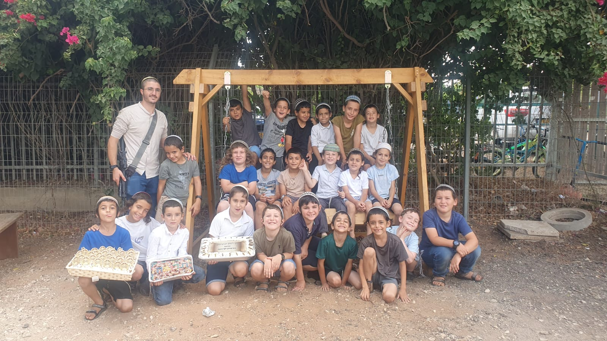
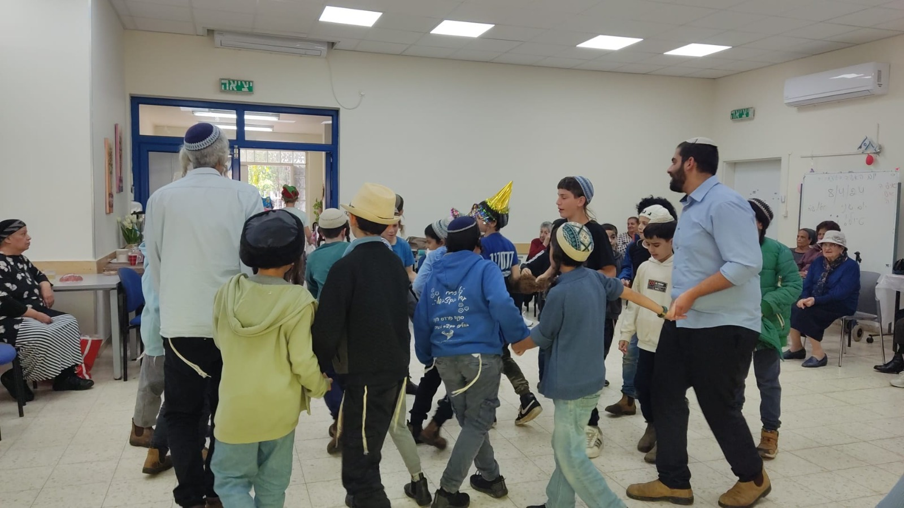
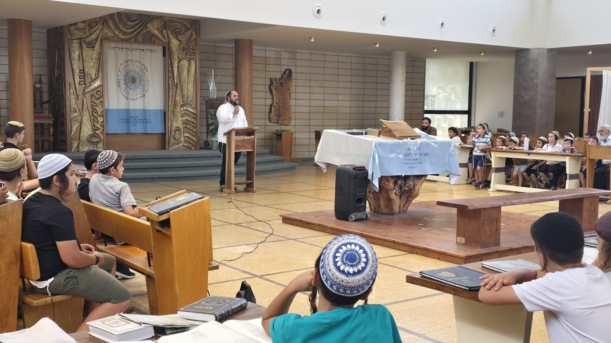
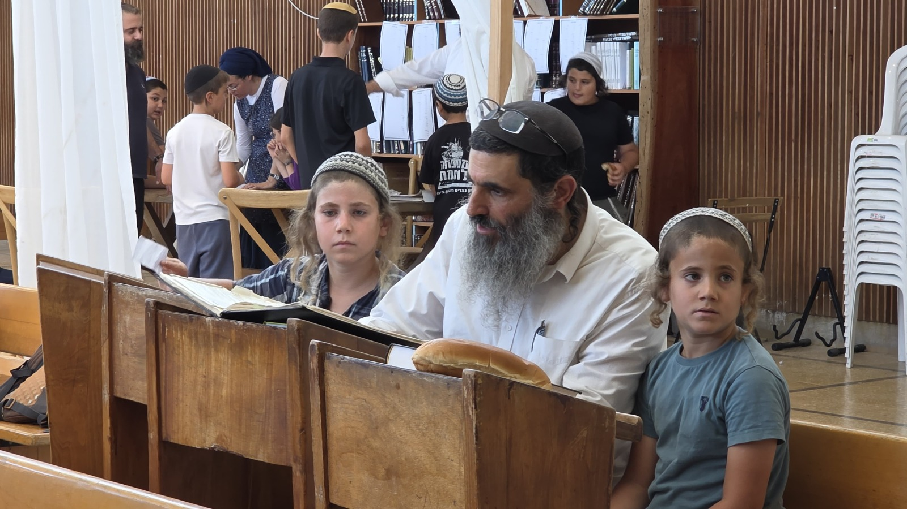
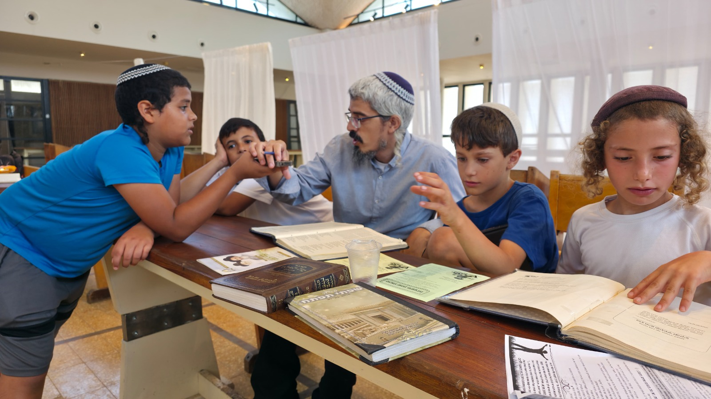
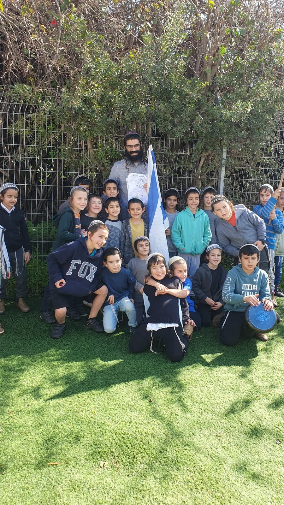
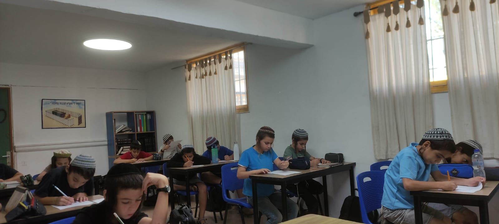

8 שנים של חינוך לתורה ולחיים
לגדול בתורה.
לגדול בתורה.
לפרוח בחיים.
תלמוד תורה עץ חיים · פרדס חנה–כרכור, כיתות א׳–ו׳. בית חם ליותר מ־112 ילדים, עם יחס אישי ואהבת תורה בכל יום.
8שנות פעילות
112תלמידים
6כיתות, א׳–ו׳
24תלמידים לכיתה, לכל היותר






